1. Azure Text
1. El portal d'Azure
Anem a treballar un concepte interessant en aquesta unitat, i és el que s'anomena AIaaS (Intel·ligència artificial as a service). Consistirà en fer servir plataformes amb models i eines ja entrenades, preparades per a utilitzar-les.
Començarem a treballar amb Azure, i podem veure la justificació ací.
Aquests materials complementaris són de Javier Catalá Jiménez.
1.1. Alta amb Azure amb compte educatiu
Actualment la Conselleria d'Educació disposa d'un contracte amb Microsoft on disposem d'un compte corporatiu, dins del domini @alu.edu.gva.es i @edu.gva.es per a alumnes i professors, respectivament. Amb aquest compte disposem de 100$ de saldo per a les recursos que utilitzem, i accès a la capa gratuïta dels serveis durant un any.
Aquests serveis tenen certes limitacions, con per exemple 5000 transaccions mensuals, suficients per a la nostra feina dins del curs.
Podem seguir el procediment d'alta en aquesta presentació
1.2. Alta amb compte gratuït
Suposadament amb aquesta capa gratuïta tindrem prou per a les tasques del nostre curs. Aquesta funcionarà sempre que ens quede algo de saldo. La solució és crear-te un nou compte, amb un correu distint, obviament on tindràs 200$ i la capa gratuita de nou durant un any.
El problema d'aquest recurs és que hem de posar el numero de la targeta de crèdit, amb la qual cosa hem de tenir molta cura de aturar els serveis que puguem arrancar, si no volem tindre sorpreses a final de més. Per sort, sembla que Microsoft abans de carregar-nos res ens enviarà un correu electrònic

1.3. Configuració general de les API d'azure
Anem a veure com és funcionament general d'aquest serveis d'IA:
- Haurem de crear des de la plataforma el recurs que desitjem; veu, imatge, so, etc.
- Un cop creat, haurem de veure a la seua configuració els paràmetres:
- entrypoint → és la url del recurs, on farem les peticions del mateix
- key o token → és el identificador que ens ha assignat Azure per a fer ús del recurs.
- Des del nostre programa carregarem la llibreria per a connectar-nos
- Farem la petició
- Processarem els resultats
Pots veure el procés de creació als següents passos. En auqest cas veurem el de text, que és el primer que treballarem:
-
Li creem un nou recurs de Anàlisi de text: 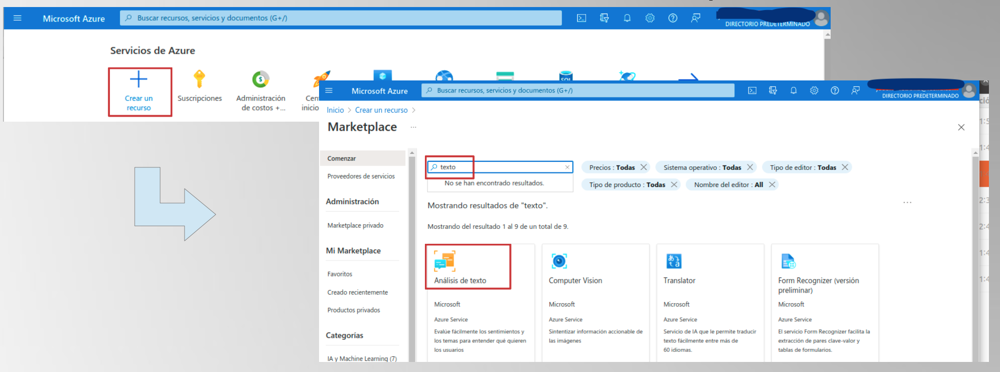
-
Li diguem crear: 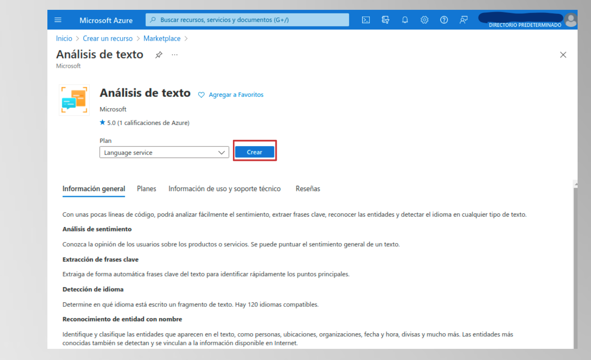
-
Es deixen les característiques per defecte, sense afegir-ne cap altra: 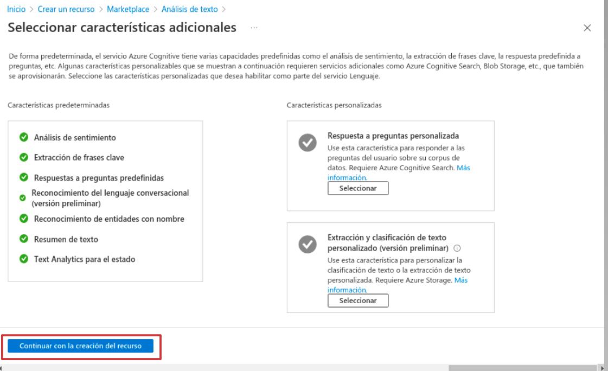
-
Indiquem que el grup de recursos, o el creem si és el primer cop (com a nom,
UDCognitiveServiceso simimlar) i un nou recurs d'Anàlisi de Text, per exempleTextAnalyticsDemoJoange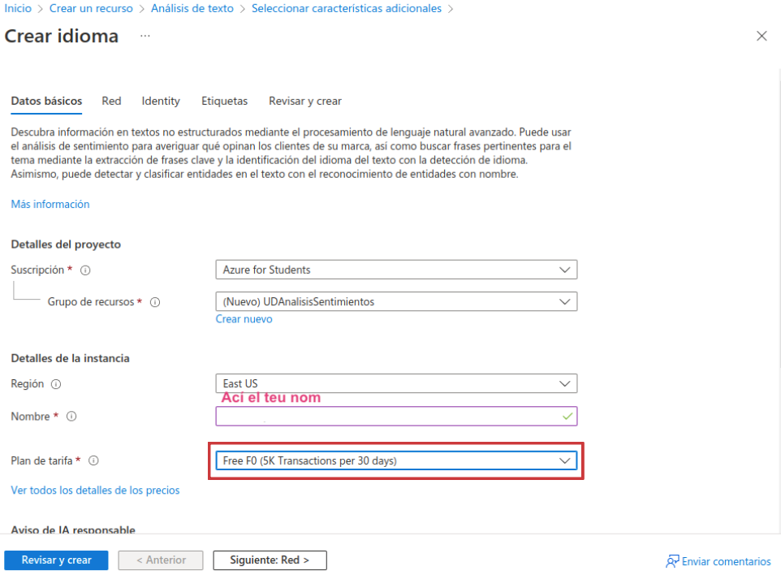 -
Li indiquem el pla de pagament, gratuït. Revisem i llavors acceptem els termes de licència: 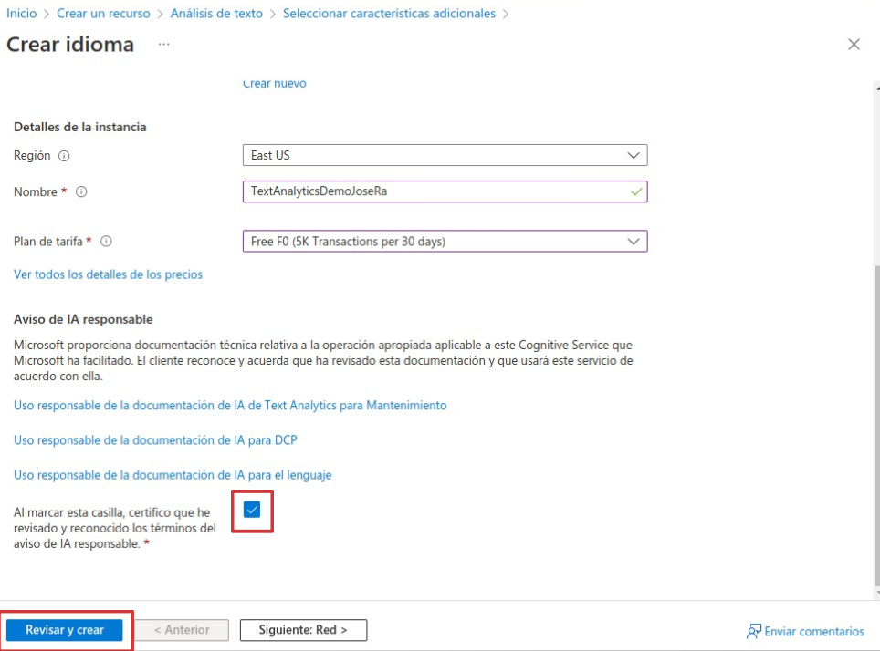
-
Finalment creem: 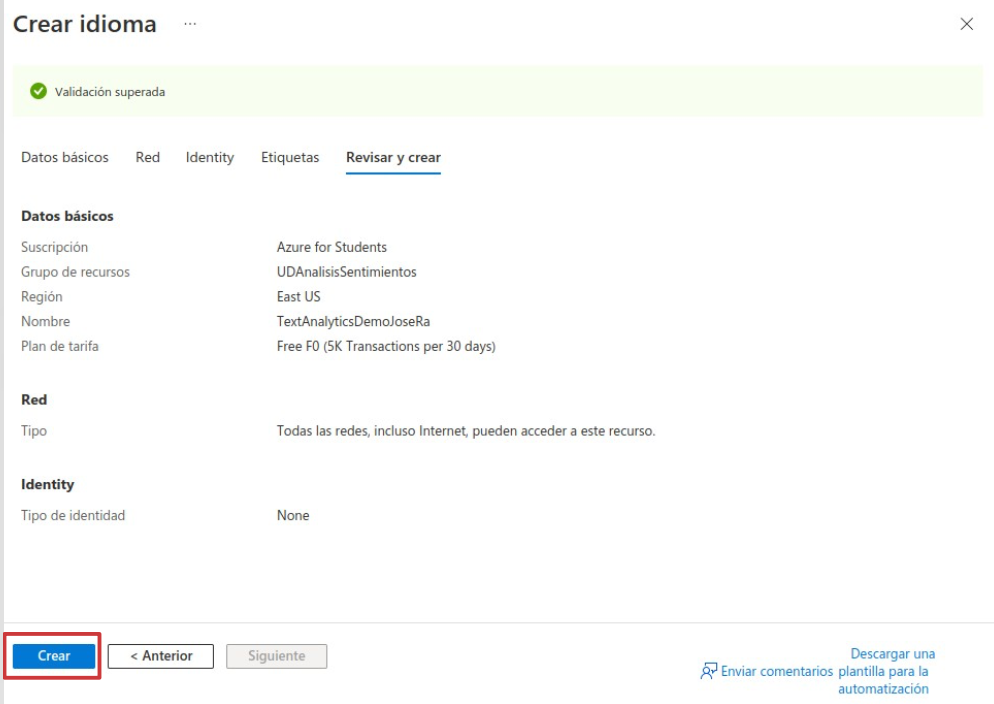
-
I ja tenim el servei a punt. 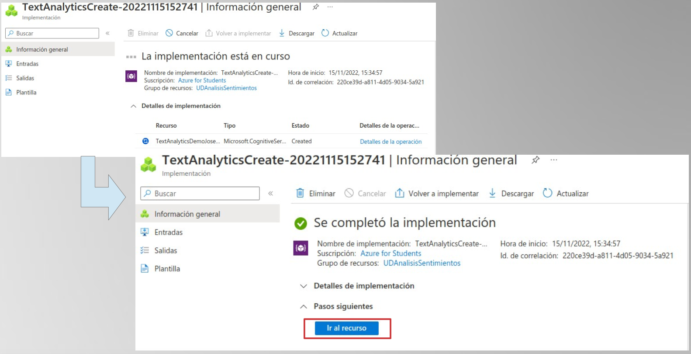
Podem fer les peticions mitjançant request, postman o curl, però ens serà més complicat, sobretot per temes de seguretat:
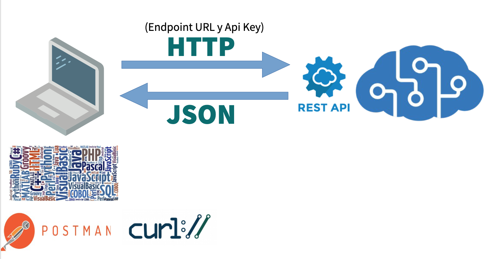
La millor alternativa és fer servir les llibreries del SDK de Azure, disponibles per als llenguatges de programació més utilitzats:
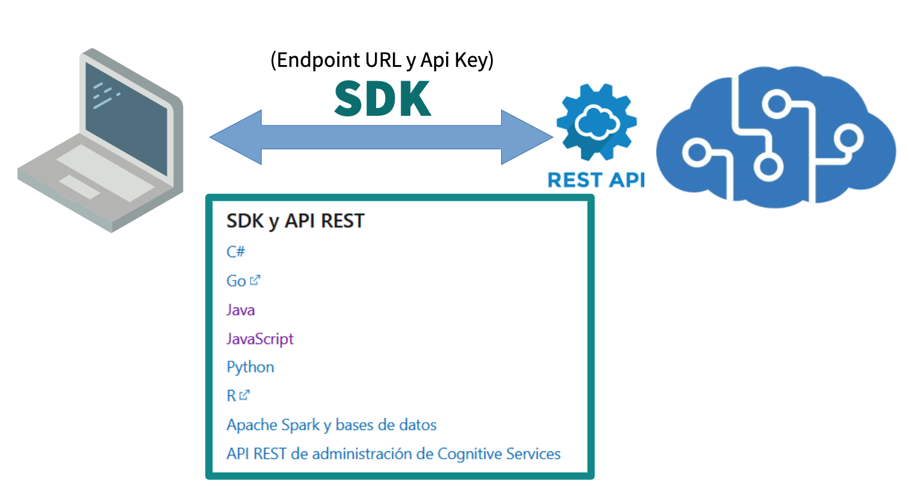
Aquest eines, a banda d'oferir objectes estructurats per a enviar i arreplegar la informació, encripten automàticament les peticions (i la informació que viatja amb elles), donant-li una major capa de protecció.
2. Llenguatge - Anàlisi de sentiments
Anem a estudiar com podem analitzar els sentiments d'un text. L'anàlisi de sentiments és com fer un exàmen d'emocions en textos per determinar si el contingut expressa opinions positives, negatives o neutres. Els algorismes d'anàlisi de sentiments utilitzen processament del llenguatge natural (PLN) per analitzar les paraules i frases en un text i determinar la seva tonalitat emocional.
Això implica:
- identificar paraules clau,
- frases o contextos que indiquin sentiments
Per exemple, si algú diu estic molt content amb aquest producte, el sistema hauria de reconèixer la paraula content i interpretar-la com una expressió positiva.
Aquesta tecnologia és molt utilitzada en:
- monitorització de xarxes socials
- ressenyes de productes
- opinions dels clients i
- altres àmbits on es vol entendre la resposta emocional dels usuaris.
Hi ha diverses eines i plataformes que ofereixen serveis d'anàlisi de sentiments utilitzant tecnologies de processament del llenguatge natural (PLN). Algunes d'aquestes inclouen:
-
IBM Watson Natural Language Understanding: Proporciona anàlisi de sentiments entre altres funcionalitats PLN.
-
Google Cloud Natural Language API: Ofereix anàlisi de sentiments i altres funcions de PLN.
-
Microsoft Azure Text Analytics: Proporciona anàlisi de sentiments, detecció d'idiomes i altres funcionalitats basades en text.
-
AWS (Amazon Web Services) ofereix una eina anomenada Amazon Comprehend que inclou funcionalitats d'anàlisi de sentiments, que pot detectar i analitzar les emocions expressades en text. A través de l'API d'Amazon Comprehend, pots enviar text i rebre informació sobre les emocions associades, com ara positiu, negatiu, neutre o mixt.
-
Aylien: Una plataforma de processament del llenguatge natural que ofereix anàlisi de sentiments i altres eines d'anàlisi de text.
-
VADER (Valence Aware Dictionary and sEntiment Reasoner): Una eina específica per a l'anàlisi de sentiments en anglès, molt utilitzada i senzilla.
-
NLTK (Natural Language Toolkit): Una llibreria de Python que inclou mòduls per a l'anàlisi de sentiments i altres tasques de PLN.
-
TextBlob: Una llibreria de Python que facilita l'anàlisi de sentiments i altres tasques relacionades amb el processament del llenguatge natural.
-
Hugging Face Transformers: Una llibreria que proporciona models preentrenats per a diverses tasques, inclosa l'anàlisi de sentiments.
2.1. Detecció de sentiments amb Azure
Anem a estudiar les eines que ens ofereix el SDK de Python per a Azure
2.1.1. Creació del client
L'objecte clau per fer la crida és el client, i aquest és els class azure.ai.textanalytics.TextAnalyticsClient
Aquest classe presenta dos arguments:
endpoint (str)→ sent la url al nostre recurs del servei del llenguatge supportat per Azure. Es del tipushttps://<resource-name>.cognitiveservices.azure.com.credential (AzureKeyCredential or TokenCredential)→ La credencial necessaria per a validar el client al servei d'Azure. Pot ser de dos tipus:AzureKeyCredentialsi fem servir un token del serveis de Cognitive Services/Language API- Un token credential de
azure.identity.
Aquesta informació la pots extreure del servei que haurem creat prèviament. Des de les opcions del recurs: 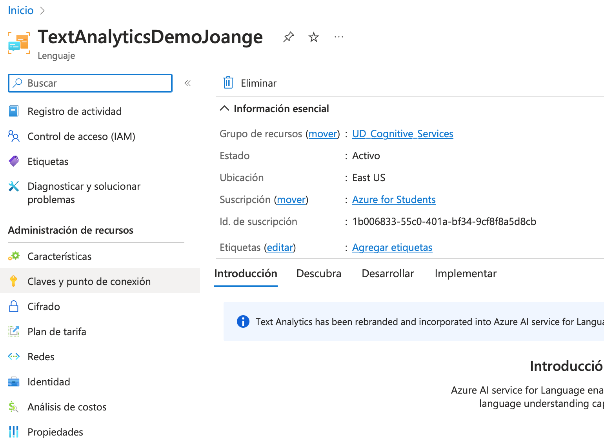
I les podem veure o inclòs directament copiar-les: 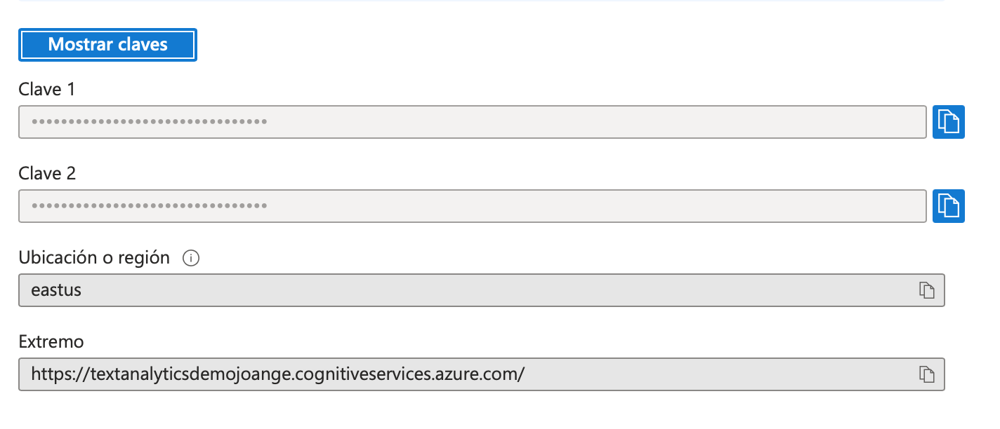
Example de configuració del client
2.1.2. Avaluant el sentiment
El mètode per a fer la petició és analyze_sentiment, amb aquesta sintaxi retallada:
| Python | |
|---|---|
Per simplificar:
-
A aquest mètode li passarem un o més textos, anomentats com a documents. Ha de ser una llista:
- Poden ser un llistat de textos, com a str:
Python - Un llistat del anomentat
TextDocumentInput, en el qual podem donar-li més detalls:
-
El retorn de la funció és una llista combinada (de tuples) de
AnalyzeSentimentResultoDocumentError, amb tants elements com documents s'han passat.
Valor real retornat
Com podem veure, les opcions importants del AnalyzeSentimentResult son:
sentiment→ ens classifica el text avaluat en positiu, neutral o negatiu. Pot apareixer un mixed.confidence_scores→ ens informa de la probabilitat de cada un dels tres nivells.sentences→ per a cada unitat del text individual (fixa't que divideix el text en sentències) ens torna a donar la informació per separat.
Procés dels resultats
3. Llenguatge. Detecció d'idioma
Per a anàlisi de llenguatge necessitem crear un recurs de traducció, de manera similar de com l'hem creat anteriorment.
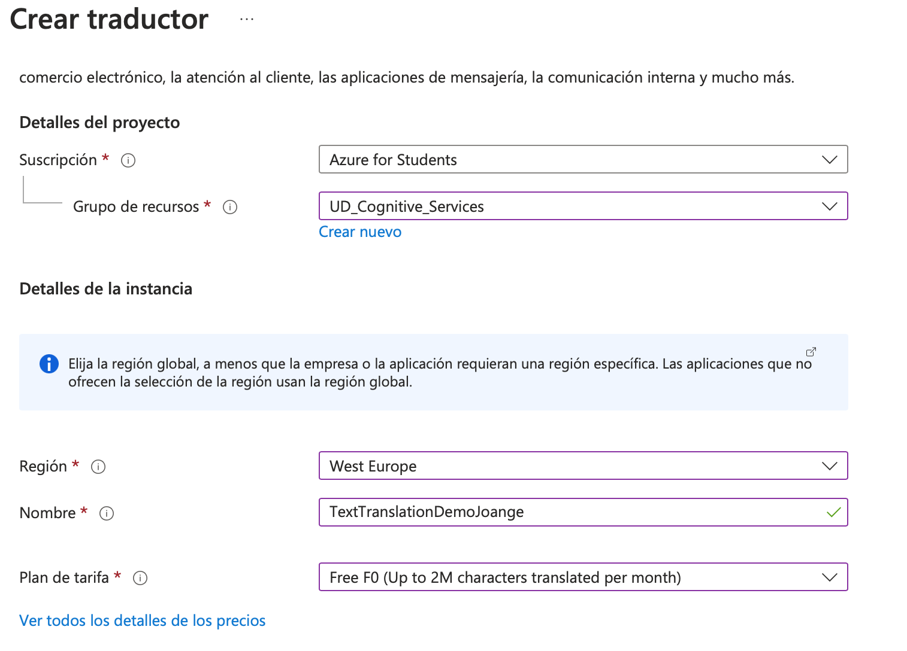
Per fer una primera detecció del llenguatge, haurem de procedir invocant al recurs d'Azure i cridar al mètode detect_language de l'analitzador de text:
Accès al recurs i identificació del llenguatge
Els resultat és un llistat (un per text enviat) de DetectLanguageResult, un objecte que el podem veure detallat com segueix:
| JSON | |
|---|---|
on l'element més important és el DetectedLanguage, contenint com podem veure el nom del llenguatge i el grau de confiança de la detecció.
4. Llenguatge - Detecció d'entitats
La detecció d'entitats en text d'Azure és una funció que utilitza tecnologies de processament de llenguatge natural per identificar i extraure informació rellevant o entitats d'un text. Les entitats es refereixen a elements específics o conceptes dins del text, com ara noms de persones, llocs, dates, quantitats, etc.
Això pot ser molt útil en diverses aplicacions, com ara l'anàlisi de sentiments (vist), la categorització de contingut, l'extracció d'informació clau i altres tasques de processament de llenguatge natural.
Per fer-lo servir, haurem de fer referència a un TextAnalyticsClient com el que hem fet servir abans. A l'igual que abans, prepararem el text o texts dins d'un llistat de docuents, i cridarem el mètode recognize_entities. Pots trobar més informació ací
Reconeixemnet d'entitats
El resultat és un llistat d'objectes de tipus RecognizeEntitiesResult, que ja deuriem de recòrrer per treure una col·lecció, anomenada CategorizedEntity, on tenim la informació de les entitats detectades. Ací podem veure un exemple de valor retornat:
4.1. Entitats enllaçades
Investiga al voltant de les Entitats enllaçades, on a banda de trobar les entitats, podem trobar enllaços per aprofundir en les entitas trobades.
5. Llenguatge - Traducció de texts
Per a la traducció anem a fer una crida que no requereix d'un recurs propiament dit però si d'una credencial d'Azure. Com a novetat anem a fer-ho amb un request simple en compte d'eines concretes del SDK. Hem de preparar per tant la petició del request, amb aquestes característiques:
| Python | |
|---|---|
Preparació de la url
| Python | |
|---|---|
Amb això ja tenim el punt de conexió de la nosta API
Paràmetres de la crida
En aquest apartat indicarem la versió de la api, així com l'idioma del text que anem a passar i una llista dels idiomes als quals volem traduir. Tenim a continuació un exemple:
Capçalera de la petició
Ací hem de indicar la metainformació de la petició, en el format esperat per la API. En la primera opció posarem la nostra clau del recurs TextAnalytic que hem creat.
L'altra opció important és la localització del servei, al nostre cas europa de l'oest
Text a traduir
Ens resta completar el cos de la petició, indicant els text o textos a traduir. Serà una llista amb tants elements json com desitjem, encapsultas dins d'una etiqueta text.
Crida i arreplegant el resultat
Finalment farem la crida i arreplegarem el resultat en un JSON. Aquest JSON conte una llista amb una col·lecció d'objectes, tants com texts passats:
- Objectes amb clau
translations, que tindra tindrà un llistat amb les traduccions als distints idiomes que hem indicat. - Cada objecte dins del llistat contindrà:
- Una clau
toon d'indica a quin idioma s'ha traduit - Una clau
textamb el text traduit a l'idioma indicat
| Python | |
|---|---|
i el contingut de la resposta és pot veure a continuació:
5.1. Ampliació
Investiga per la teua part i intenta fer la implementació anterior amb eines pròpies del SDK d'Azure. Ens referim a TextTranslationClient
5.2. Traducció de documents
Respecte a la traducció de documents sencers, la deixarem com a opcional, ja que requereix de la creació d'un recurs especial, que pots suposar un cost afegit. Tot i ser relativament barat, anar en compte per no acabar el saldo que disposem d'Azure
La forma de treballar seria la següent:
- Crear un Azure Blob Storage containers, que és un contenidor (espai) per a emmagatzemar els nostres documents a traduir.
- Crear un DocumentTranslationClient, en el qual especificarem:
- Entrades: que seràn documents guardats al nostre contenidor
- Eixides: que es guardaran també al nostre contenidos
Queda proposat com a exercici opcional
6. Llenguatge - Text a veu i vice-versa
En primer lloc hem de crear un recurs de veu, dins del nostre contenidor de recursos.
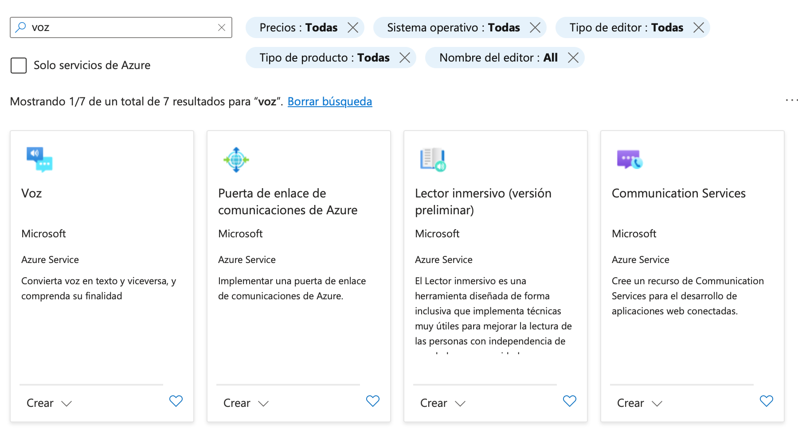
Recorda de posar el pla gratuït. Als noms no poden fer-se servir barres baixes.
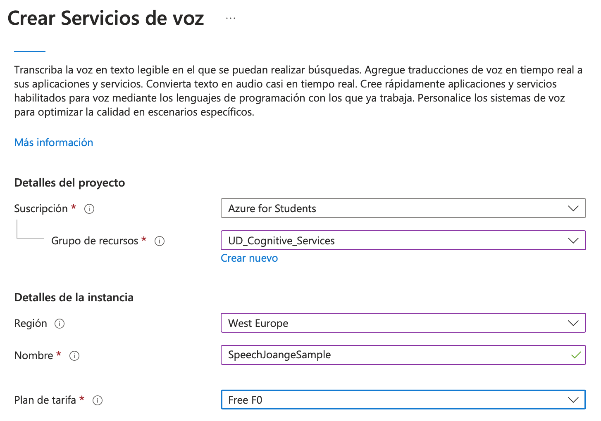
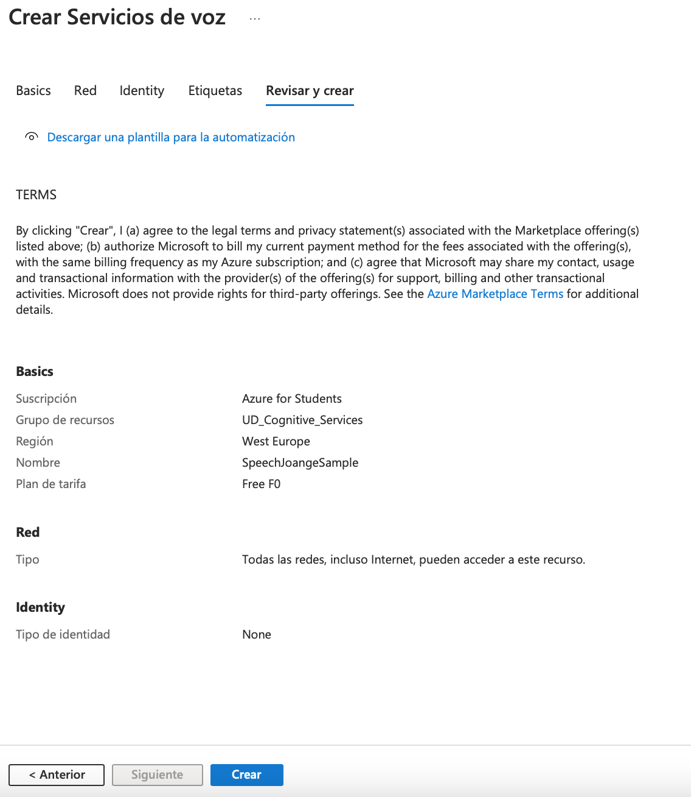
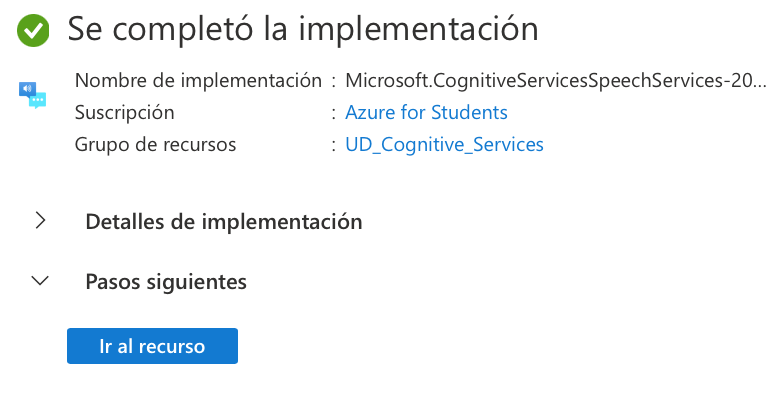
Per últim fixar-se que el recurs no és nostre propi, sinò és un entrypoint genèric. Serà amb el token com s'accedirà al nostre recurs.
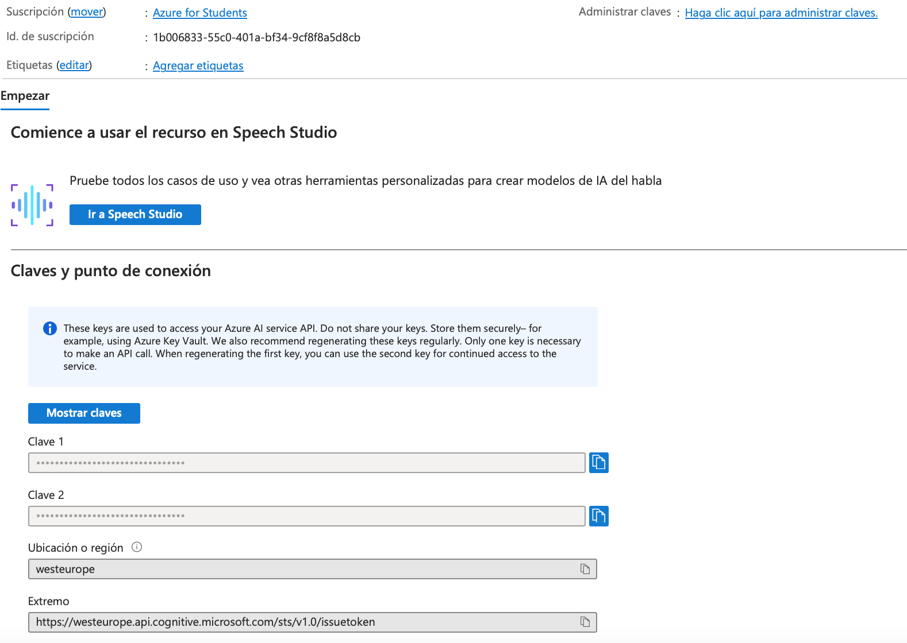
Al nostre programa ens caldrà per tant la regió i el token d'accès
6.1. Desenvolupant el programa, de veu a text
Necessitarem crear un objecte de tipus SpeechConfig, al qual li indicarem el token i la regio creada
Creació del recurs de veu
A continuació necessitarem crear la configuració del audio i del reconeixedor de veu, tot a partir del sdk de veu:
Audio i reconeixedor
Ahí indiquem:
- Que farem servir el micròfon per defecte a la classe
AudioConfig. Podeu trobar més informació ací - Enllacem el microfon amb la configuració creada anteriorment
Finalmen farem servir el mètode recognize_once_async per a transcriure blocs de fins a 30 segons o fins detectar un silenci. Podeu trobar més informació per a més coses dins de la documentació de Reconeiximent de veu
Crida i processament del resultat
El resultat obtigut desprès de speech_recognizer.recognize_once_async().get() és algo un SpeechRecognitionResult
que te com a contingut:
| JSON | |
|---|---|
6.2. Desenvolupant el programa, de text a veu
Indiquem sols el programa d'exemple, el qual deuries de provar i analitzar.